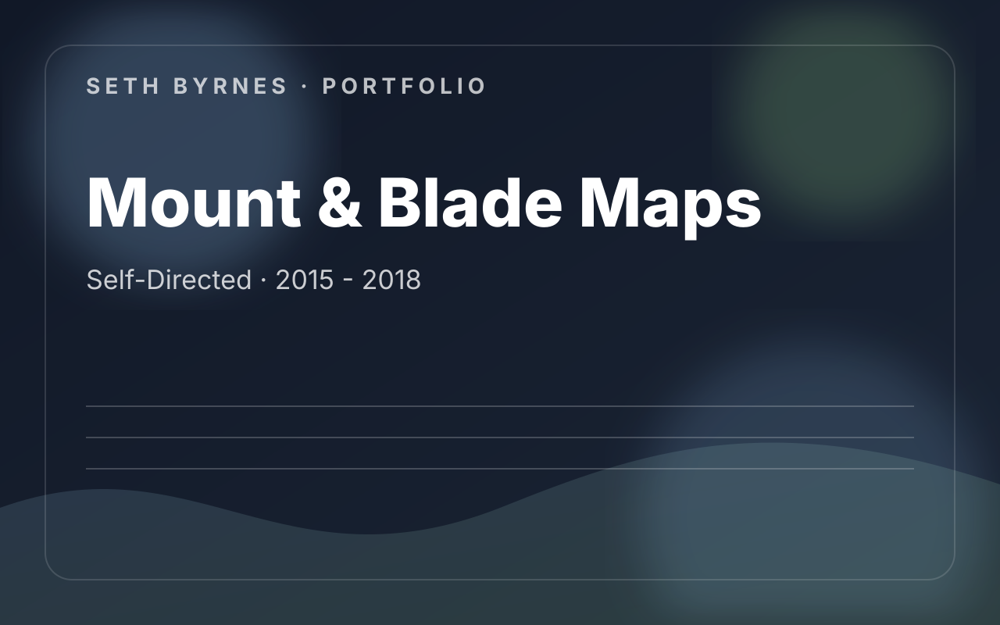

Self-Directed · 2015 - 2018
Mount & Blade: With Fire & Sword Community Maps
A long-running multiplayer mapping project that translated close reading of developer intent into original maps, overhauls, and practical community outcomes.

Contribution Areas
- Designed and iterated on 25+ original multiplayer maps.
- Overhauled 50+ community maps and supported gameplay modifications.
- Balanced spaces around the game’s metrics, engagement ranges, and movement speed.
- Used content quality and variety to help grow a multiplayer server community.
What I Owned
- Competitive map balance
- Metrics-driven iteration
- Community-facing content planning
- Long-tail support and refinement
What This Work Demonstrates
- Strong independent proof of level design discipline.
- Focuses on playability, not just visual novelty.
- Shows sustained community impact over time.
Project Summary
Self-directed multiplayer mapping work built around balance, metrics, server growth, and long-term community use.